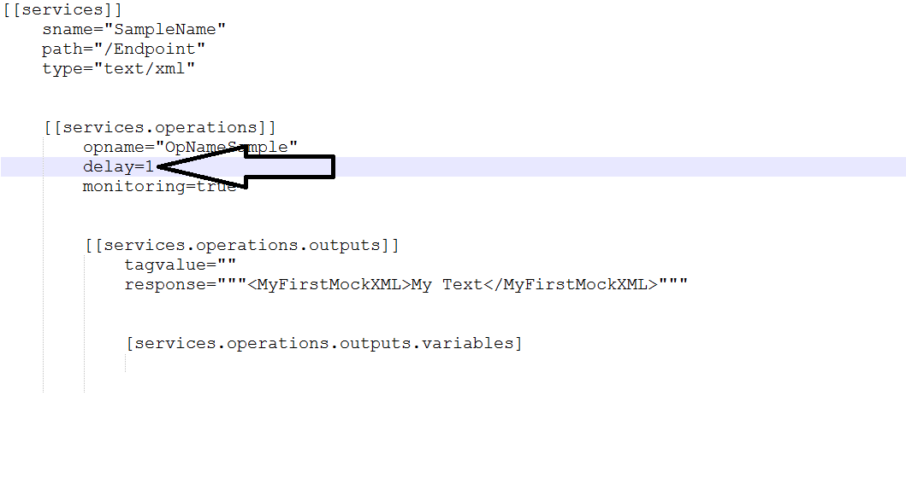
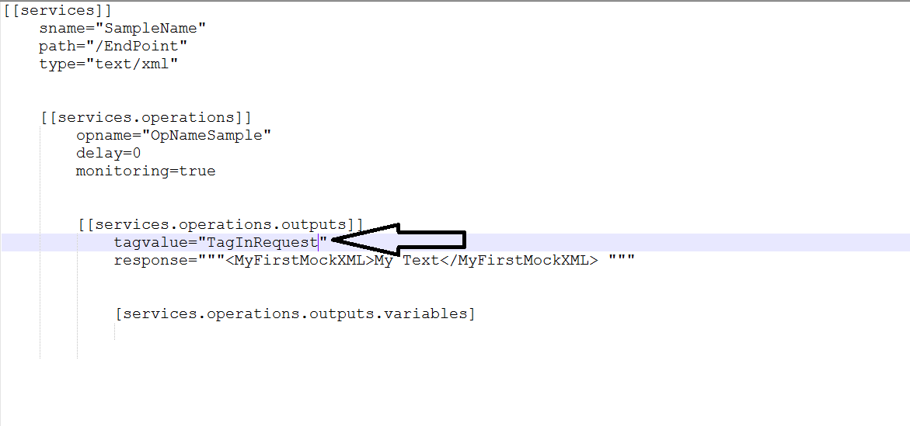
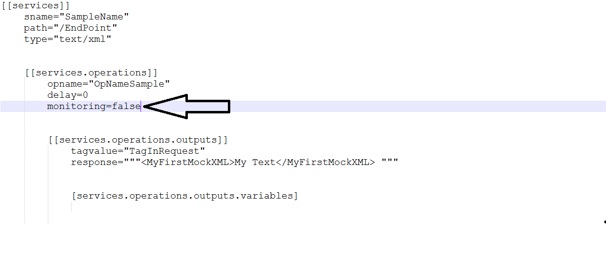
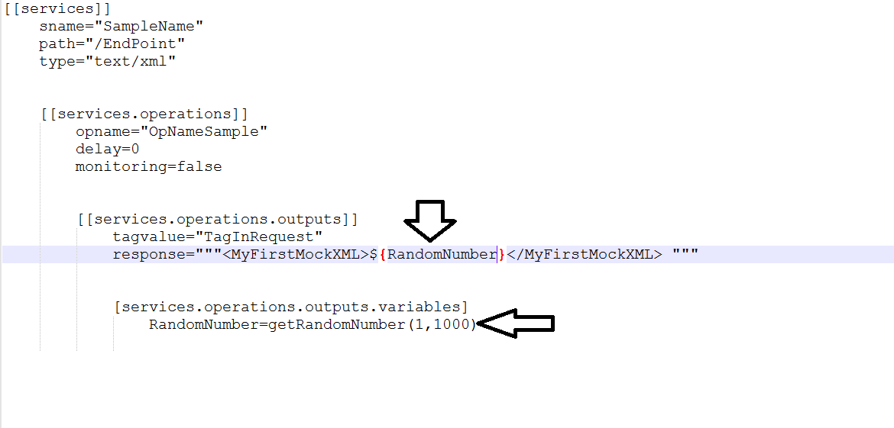

This tool helps you to easily create all types of responses for dependencies such as REST or SOAP services using a configuration file (.TOML). With this you can test applications easily and affectively, isolate the system-under-test and ensure tests run reliably.Having to configure your responses in the TOML file using pre-built Go methods can reduce your time to set up a mock server and easily deploy them independently and quickly. At the end all you have to do is place the VirtualizeQD.exe file and the TOML file in the same location and run (double click .exe file) your own mock server to simulate your desired responses. Details on how to edit your TOML file in order to configure your responses are given below.
TOML file is a text file with a .toml extension that will come with the tool's package. You can setup your mock service using this file. This doesn't need any amount of programming expertise, follow the below instructions and fill the information as per the template and you will soon have your mock service ready
sname="SampleServiceName" path="/SamplePathOfTheEndpoint" type="text/xml"
opname="SampleOperationName" delay=1 monitoring=true
tagvalue="sampleTagValue" response=My First Mock response [services.operations.outputs.variables] Samplevariables="*customFunc()"
The file consists of three sections. These three sections serve as the input to the VirtualizeQD server. The description of these three sections are given below along with an example for a sample mock service - Service section begins with [[services]], this format/syntax has to be maintained for all the mock services that needs to be created. This will be followed by 'sname' which needs to be assigned the name of the service you wish to create. 'sname' should appear as how it appears in the template, the service name is user provided. sname is followed by 'path', the value of the 'path' si user provided and should begin with '/' followed by the end point name that you wish to have. Finally 'type' for SOAP services it should be "text/xml" and for REST it should be "text/json" - Operations section begins with [[services.operations]], this format/syntax has to be maintained for all the mock services that needs to be created. This will be followed by 'opname' which needs to be assigned the name of the operation you wish to create. 'opname' should appear as how it appears in the template, the actual operation name is user provided. opname is followed by 'delay', the value of the 'delay' is taken as number of seconds the server waits before sending the response, it is user provided and should contain integers. Finally 'monitoring' is for enabling detailed monitoring (log request and response)for the services it should be either set to true (enable) or false(disable). - Output section contains two sections with [[services.operations.outputs]] and [[services.operations.outputs.variables]], this format/syntax has to be maintained for all the mock services that needs to be created.[[services.operations.outputs]] contains 'tagvalue' to which the tagname of any unique tag which will be present in the incoming request is assigned. This acts as an indicator to help the server map correct responses to the incoming requests. The value can either be the actual tag name or the Xpath to it. This will be followed by 'response' which hold the actual response to be sent. 'response' should appear as how it appears in the template. Incase there are dynamic values in the response, we can address those values by invoking pre-built GO functions using the nexxt section [services.operations.outputs.variables]. This is the section where Pre built Go Methods are mentioned and the values are passed to the response. the value of the 'path' si user provided and should begin with '/' followed by the end point name that you wish to have. Finally 'type' for SOAP services it should be "text/xml" and for REST it should be "text/json"
Setting the delay to 1 makes your end point to wait for 1 second before it could send the response. The time unit is in seconds
Assigning a value/string to 'tagvalue' variable can make the end point to respond only when this particular string is found in the request
By default logging in enabled in the config file.
The below example will generate a random variable and send it in the response. Note tha inorder to be sent in the response the user defined variable must to enclosed in the flowery braces with the dollar symbol in the front
